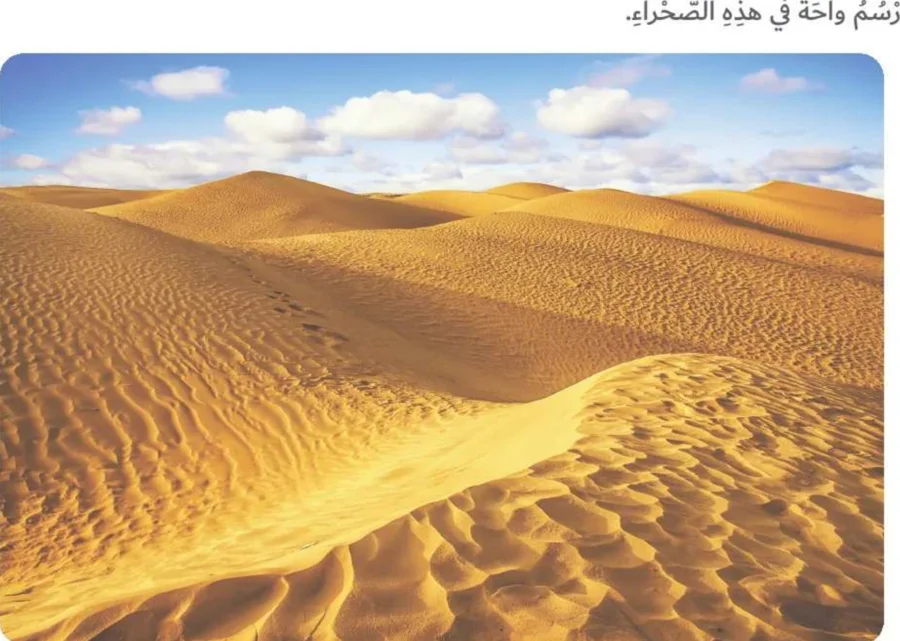

بِطاقَةُ الْمَصادِرِ وَالْمَفاهيمِ: طَبيعَةُ بِلادي 2 (ب): الْكُثْبانُ وَالصَّحْراءُ
الدِّراساتُ الِاجْتِماعِيَّةُ · الصَّفُّ الرّابِعُ · ص 49–51
لِلْجَميعِ

يَغْلُبُ عَلى مَظاهِرِ السَّطْحِ في بِلادي الطَّبيعَةُ الصَّحْراوِيَّةُ، وَالصَّحْراءُ أَرْضٌ جافَّةٌ قَليلَةُ الْمَطَرِ، مِنْ خَصائِصِها: الْحَرارَةُ الْمُرْتَفِعَةُ صَيْفًا وَالْمُنْخَفِضَةُ شِتاءً، وَنُدْرَةُ الْمَطَرِ، وَقِلَّةُ الْغِطاءِ النَّباتِيِّ، وَقِلَّةُ السُّكّانِ، وَتَنْتَشِرُ فيها الْواحاتُ.📖 أَقْرَأُ النَّصَّ
يَغْلُبُ عَلى مَظاهِرِ السَّطْحِ في دَوْلَةِ الْإِماراتِ الْعَرَبِيَّةِ الْمُتَّحِدَةِ الطَّبيعَةُ الصَّحْراوِيَّةُ، وَالصَّحْراءُ هِيَ أَرْضٌ جافَّةٌ قَليلَةُ الْمَطَرِ، وَمِنْ أَهَمِّ خَصائِصِها: الْحَرارَةُ الْمُرْتَفِعَةُ صَيْفًا وَالْمُنْخَفِضَةُ شِتاءً، وَنُدْرَةُ الْمَطَرِ، وَقِلَّةُ الْغِطاءِ النَّباتِيِّ، وَقِلَّةُ عَدَدِ السُّكّانِ. تَنْتَشِرُ في صَحاري دَوْلَةِ الْإِماراتِ الْعَديدُ مِنَ الْواحاتِ، فَهِيَ مَناطِقُ مُنْخَفِضَةٌ في الصَّحْراءِ تَتَوافَرُ فيها الْمِياهُ.
كِتابي ص 49–51
📘 كَلِماتي
الصَّحْراءُ
أَرْضٌ جافَّةٌ قَليلَةُ الْمَطَرِ.
الْواحَةُ
مِنْطَقَةٌ مُنْخَفِضَةٌ في الصَّحْراءِ تَتَوافَرُ فيها الْمِياهُ.
الْكُثْبانُ الرَّمْلِيَّةُ
تِلالٌ مِنَ الرِّمالِ تُكَوِّنُها الرِّياحُ.
الْمِياهُ الْجَوْفِيَّةُ
مِياهٌ مُخَزَّنَةٌ تَحْتَ سَطْحِ الْأَرْضِ.
💡 تَعَلَّمْتُ
🏜️يَغْلُبُ عَلى سَطْحِ بِلادي الطَّبيعَةُ الصَّحْراوِيَّةُ، وَالصَّحْراءُ أَرْضٌ جافَّةٌ قَليلَةُ الْمَطَرِ.
🌡️مِنْ خَصائِصِها: الْحَرارَةُ الْمُرْتَفِعَةُ صَيْفًا وَالْمُنْخَفِضَةُ شِتاءً، وَنُدْرَةُ الْمَطَرِ.
🌿وَقِلَّةُ الْغِطاءِ النَّباتِيِّ، وَقِلَّةُ عَدَدِ السُّكّانِ، وَتَنْتَشِرُ فيها الْواحاتُ: مَناطِقُ مُنْخَفِضَةٌ تَتَوافَرُ فيها الْمِياهُ.
🌴تَمَكَّنَ السُّكّانُ مِنْ حَفْرِ الْآبارِ وَالْحُصولِ عَلى الْمِياهِ الْجَوْفِيَّةِ، فَحَوَّلوا الْبِقاعَ الْقاحِلَةَ إِلى بُقَعٍ خَضْراءَ بِالنَّخيلِ وَتَرْبِيَةِ الْحَيَواناتِ.
✅ أُطَبِّقُ
☐أَسْأَلُ أُسْرَتي: ما أَقْرَبُ واحَةٍ إِلى مَدينَتِنا؟
☐أُكْمِلُ كِتابي ص 51.
🇦🇪 وَطَني: مِنَ الصَّحْراءِ تَعَلَّمَ آباؤُنا الصَّبْرَ، وَبِالْعَمَلِ حَوَّلوها إِلى خَيْرٍ وَعُمْرانٍ.
🏅 أَعْرِفُ صَحْراءَ وَطَني